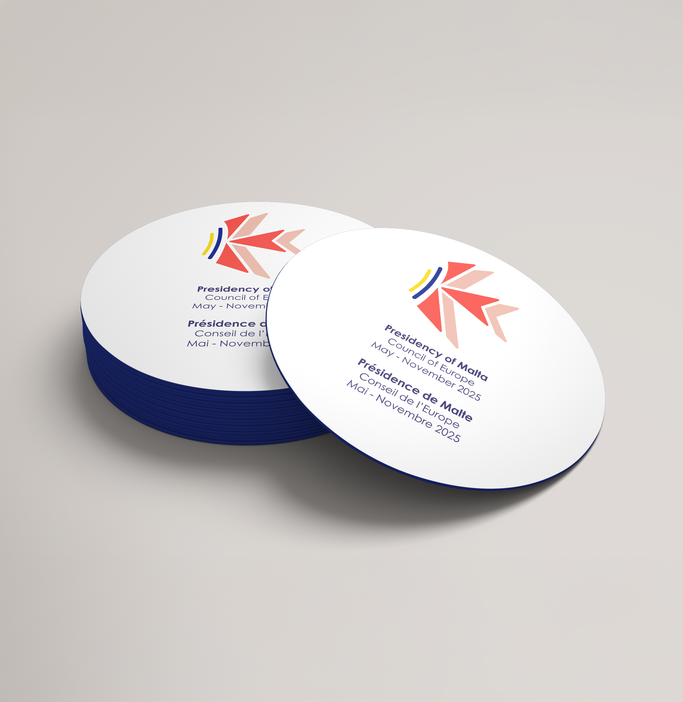
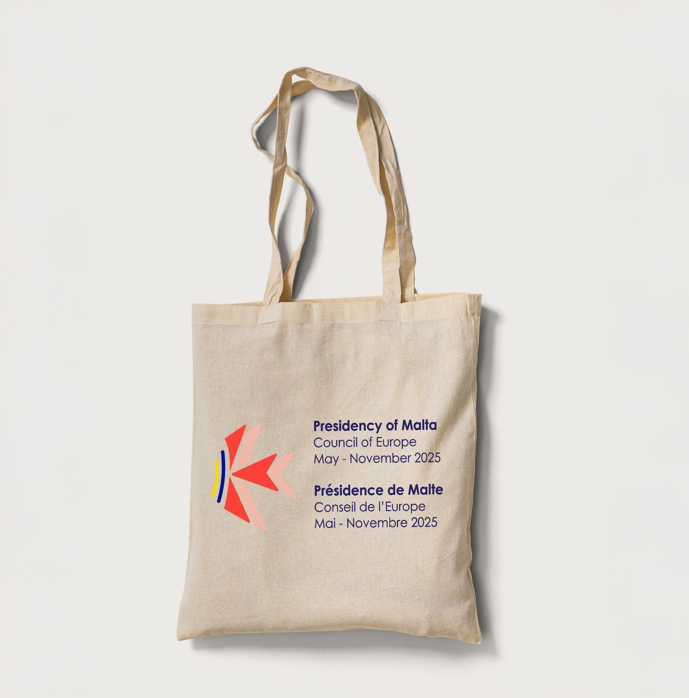
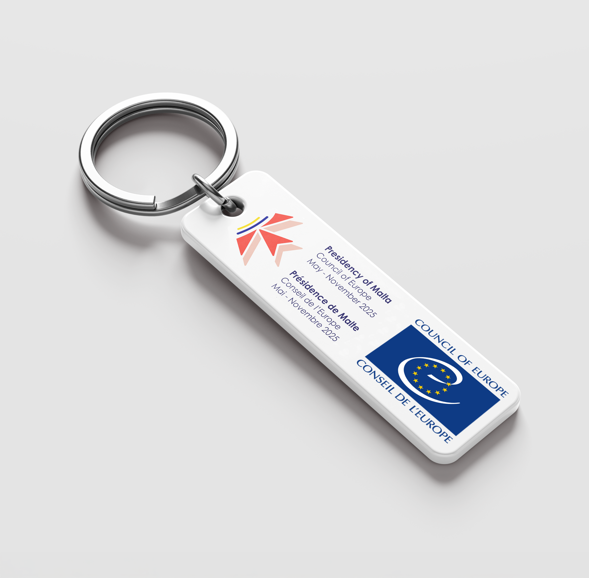
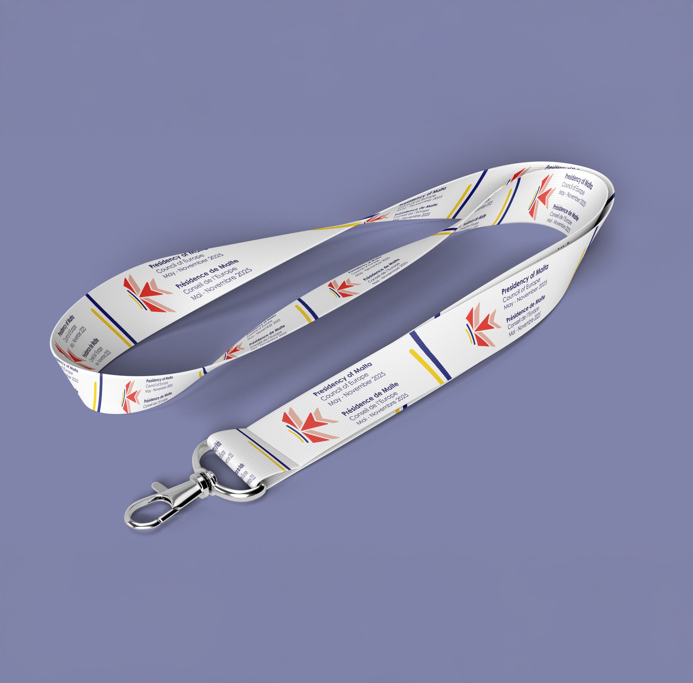
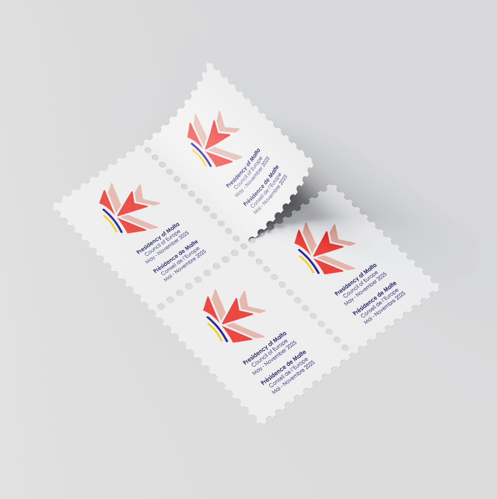

LARGE DIGITAL SCREEN DISPLAY
In 2024, the European Council Representative of Malta announced to MCAST that Malta would hold the
Presidency of
the Council of Europe from May to November 2025. As part of this initiative, students at MCAST Mosta
were
invited to develop a brand identity, with the best visual concept being selected for official use.
Although the
project had a tight deadline of only two months, the experience proved to be incredibly rewarding.
While
I did
not win the final selection, my work was recognised and shortlisted among the top submissions.
The logo is a symbolic composition featuring a stylized Maltese cross, conveying a message relevant
to
today's
generation. Traditionally a symbol of protection, the cross is presented in a folded form,
representing
unity
and the shared direction of the Maltese people. A sandy yellow line signifies the island itself and
its
renowned
beaches, while additional elements introduce key national colours like red (from the Maltese flag)
and
blue that
represents the sea. Together, these elements reflect both the cultural identity and natural beauty
of
Malta.



Cotton Drawstring Bags:
Portable visibility during public event activities
Coasters:
Used during meetings and encourage conversation in social gathering spaces


Tote bags:
Used as a sustainable promotion carrying the brand identity
everywhere
Keychains:
For giveaways, as an everyday reminder of international cooperation values


Lawn Banner:
Strong institutional presence outside Council venue
Vertical Banners
Citywide awareness and unified event atmosphere


Lanyards:
Identification, security, and professional event branding
Postage Stamps:
Commemorating Malta’s role in European dialogue